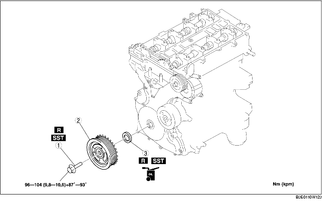

1. Demontera tändstiftsskyddet (Se DEMONTERING/MONTERING AV TÄNDSTIFTSKYDD [LF].)
2. Ta bort tändstiftskyddets fäste.
3. Demontera batterikåpan (Se DEMONTERING/MONTERING AV BATTERIET [LF].)
4. Lossa batteriets minuskabel.
5. Koppla ur kablaget.
6. Demontera följande delar.
7. Demontera i den ordning som anges i tabellen.
8. Montera i omvänd ordning mot demonteringen.

.
1. Lossa motorblockets nedre blindplugg.
2. Montera specialverktyget.
3. Vrid vevaxeln medsols tills vevaxeln är i övre dödläge för cylinder 1 (tills balansvikten kan monteras på specialverktyget).
4. Håll fast vevaxelns remskiva med hjälp av specialverktygen.
1. Skär av kanten på oljetätningen med ett rakblad.
2. Ta bort oljetätningen med en skruvmejsel som lindats med en trasa.
1. Stryk ren motorolja på oljetätningens fläns.
2. Tryck in oljetätningen en bit för hand.
3. Knacka fast oljetätningen jämt med hjälp av specialverktyget och en hammare.
1. Montera specialverktygetpå kamaxeln enligt bilden.
2. Montera M6 x 1,0-skruven för hand.
3. Vrid vevaxeln medsols tills vevaxeln är i övre dödläge för cylinder 1 (tills balansvikten kan monteras på specialverktyget).
4. Håll fast vevaxelns remskiva med hjälp av specialverktygen.
5. Dra åt vevaxelremskivans låsbult i den ordning som visas, med följande 2 steg och med hjälp av specialverktyget SST (49 D032 316).
6. Ta loss M6 x 1,0-skruven.
7. Ta bort specialverktygetfrån kamaxeln.
8. Ta bort specialverktyget från den undre blindpluggen i motorblocket.
9. Vrid vevaxeln medsols två (2) varv till övre dödläge.
10. Montera motorblockets nedre blindplugg.